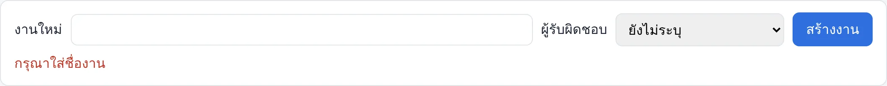

ENGSE207 · ครั้งที่ 2 · สไลด์ 1
ความรับผิดชอบและเส้นทางข้อมูล
Responsibilities & Data Flow
เริ่มจากระบบที่ เล็กที่สุด แล้วดูว่ามัน เจ็บตรงไหน
อ่านรายละเอียดครบใน เอกสารประกอบการเรียน ครั้งที่ 2 (อ่านมาก่อนแล้ว)
เราอยู่ตรงไหน
ครั้งที่ 2 จาก 15 · เริ่มจากระบบที่เล็กที่สุด
รัน Task Board v1 จริง แล้วตามคำขอหนึ่งตั้งแต่หน้าจอถึงฐานข้อมูล
อ่านโค้ด 5 ไฟล์บนกระดาษ · ตั้งทีม · repo
ตามคำขอจนถึงฐานข้อมูล · แก้กฎชื่องาน
วัดคุณภาพของ v1 · ไล่หาจุดเสีย
ต่อจากครั้งที่ 1
เรามีอะไรแล้ว ได้มาอย่างไร และวันนี้ใช้ต่อตรงไหน
| สิ่งที่ได้จาก T01 | ได้มาอย่างไร | ครั้งนี้ใช้ต่อ |
|---|---|---|
| สถาปัตยกรรม = โครงสร้าง + เหตุผล | สไลด์ 2 · เอกสารครั้งที่ 1 | อธิบายว่า v1 จะต้องเปลี่ยนเพราะอะไร |
| R · A · D และคุณลักษณะคุณภาพ | คำถามแยก R · A · D ในห้อง | นับจุดที่ต้องแก้ = ตัววัด modifiability |
| ตามคำขอ “สร้างงาน” 5 ไฟล์ | อ่านโค้ดบนกระดาษ · สไลด์ 2 และปฏิบัติ T01 | ตามคำขอเดียวกันในระบบที่ รันจริง |
| ทีม · repo · team charter | ปฏิบัติ T01 สร้าง repo จากแม่แบบ | P02 นำโค้ด v1 เข้า repo ทีม |
| เครื่องพร้อมรัน Docker | check-docker ที่บ้าน | รัน v1 บน iMac และเครื่องตัวเอง |
T01 ดู ปลายทาง บนกระดาษ · ครั้งนี้ย้อนมา เริ่มจากรุ่นเล็กที่สุด แล้วให้ระบบโตเพราะปัญหาที่ทีมเห็นเอง
ฟัง 2 ชั่วโมง · ลงมือ 3 ชั่วโมง · iMac ของห้องแล็บ
เตรียมมาก่อน ฟังสั้น ลงมือยาว
อ่านเอกสารครั้งที่ 2 · ตัวแทนทีมทำ P02
นำโค้ด v1 เข้า repo ทีม · ใครเครื่องผ่าน check-docker ลองรันที่บ้าน
สไลด์นี้
ทบทวน T01 · Monolith · เส้นทางข้อมูล · C4 กับ Docker
ปฏิบัติ A–E · มีพัก 10 นาที
รันระบบ · ทายแล้วดูของจริง · แก้กฎชื่องาน · commit
บันทึกแล็บ · บันทึกรายคน · ฝึกเพิ่ม (H1–H3)
ส่งก่อนเริ่มคาบ T04 · ศึกษาเองประมาณ 5 ชั่วโมง
ทบทวนครั้งที่ 1 · 5 นาที
จาก T01: ตอบได้ไหม
- 1สถาปัตยกรรมซอฟต์แวร์ในหนึ่งประโยคโครงสร้างหลัก (ส่วนประกอบ ความสัมพันธ์ คุณสมบัติ) + เหตุผลของการเลือก
- 2ฟังก์ชันกับคุณลักษณะคุณภาพต่างกันอย่างไรฟังก์ชันบอกว่าระบบ ทำอะไร · คุณภาพบอกว่า ทำได้ดีแค่ไหน เช่น เปลี่ยนง่าย เร็ว ไม่ล่ม · คุณภาพผลักให้เลือกโครงสร้าง
- 3กด “สร้างงาน” โดยไม่ใส่ชื่อ คำขอหยุดที่ไหน ได้ status อะไรหยุดที่ API ก่อนถึงฐานข้อมูล · ได้ 400 พร้อมข้อความ “กรุณาใส่ชื่องาน”
- 4ทำไมกฎที่ต้องจริงเสมอต้องอยู่ที่ API ไม่ใช่หน้าจอหน้าจออยู่นอกขอบเขตความเชื่อถือ · ใครก็ส่งคำขอตรงมาที่ API ได้
ผลลัพธ์ของครั้งที่ 2 · CLO1 · CLO3 · CLO4 · CLO6
จบครั้งนี้ ทำ 6 อย่างนี้ได้
- บอกหน้าที่ขององค์ประกอบ และใช้ SoC · cohesion · coupling ให้เหตุผลได้ส่วนที่ 1 · CLO1
- อธิบาย Monolith ว่าทำไมเริ่มจากแบบนี้ และชี้จุดใน v1 ที่จะเป็นปัญหาส่วนที่ 2 · CLO1
- ตามค่าหนึ่งค่าจาก event ถึงฐานข้อมูลและกลับ ทั้งกรณีปกติและผิดพลาดส่วนที่ 3 · ปฏิบัติ B · CLO3
- แยก 400 กับ 500 และบอกได้ว่าทำไมกฎต้องบังคับที่เซิร์ฟเวอร์ส่วนที่ 3 · ปฏิบัติ B–C · CLO3
- รันระบบด้วย Docker Compose อ่าน log และแยก C4 Container กับ Docker containerส่วนที่ 4 · ปฏิบัติ A · CLO4
- แก้หนึ่งจุด อ่าน diff กับคู่ แล้ว commit พร้อมเหตุผลส่วนที่ 5 · ปฏิบัติ C–D · CLO6
คำถามเปิด · คิด 1 นาที แล้วคุยกับคนข้าง ๆ
เขียน Task Board ทั้งหมดในฟังก์ชันเดียว 500 บรรทัด ยังทำงานได้ไหม แล้ว อะไรยากขึ้น?
ส่วนที่ 1 · องค์ประกอบ (component)
หน้าที่ชัด · ขอบเขตชัด · คุยผ่านสัญญา
องค์ประกอบมีหลายขนาด ขึ้นกับว่ามองระบบที่ระดับไหน
ในโค้ด
ฟังก์ชัน · ไฟล์ · โมดูล
คุยด้วยการเรียกฟังก์ชัน
renderBoard() · ส่วนที่ 5 ใน server.js
ในการรัน
โปรแกรมที่รันแยกกัน (process)
คุยด้วย HTTP/JSON · SQL
เบราว์เซอร์ · Node.js · PostgreSQL
ในการติดตั้ง
เครื่องหรือ container
คุยผ่าน network และพอร์ต
container app และ db
“ส่วนนี้รับผิดชอบเรื่องอะไร และเรื่องอะไรที่ ไม่ควรรู้” · ตอบไม่ได้ในประโยคเดียว = อาจทำหลายเรื่องเกินไป
Separation of Concerns (SoC)
แยกเรื่องที่ เปลี่ยนด้วยเหตุผลต่างกัน
| Concern ของ Task Board | เปลี่ยนเมื่อ | อยู่ที่ไหนใน v1 |
|---|---|---|
| แสดงผล | อยากได้หน้าตาหรือการจัดวางใหม่ | index.html style.css · ส่วน C ของ app.js |
| โต้ตอบกับผู้ใช้ | เปลี่ยนวิธีกดหรือกรอก | ส่วน D ของ app.js |
| สื่อสารผ่านเครือข่าย | เปลี่ยน URL รูปแบบข้อมูล การจัดการ error | ส่วน B ของ app.js · การรับคำขอใน server.js |
| กฎของงาน | ลูกค้าเปลี่ยนนโยบาย | กระจายอยู่ในส่วนที่ 5.2–5.5 |
| เก็บและค้นข้อมูล | เปลี่ยนตาราง ฐานข้อมูล หรือความเร็ว | SQL แทรกอยู่ในทุก route |
| ตั้งค่าและการเชื่อมต่อ | ย้ายเครื่อง เปลี่ยนรหัสผ่าน ขึ้น Cloud | ส่วนที่ 1 ของ server.js · docker-compose.yml |
แถวสีส้ม: กฎของงานและ SQL ไม่มีที่อยู่ของตัวเอง ฝังอยู่ใน route ทุกตัว · ทีมจะเจอปัญหานี้เองในห้อง และแก้ในครั้งที่ 4
งานชุดเดียวกัน แบ่งสองแบบ
Cohesion สูง · Coupling ต่ำ
สูง = อธิบายได้ในประโยคเดียวโดยไม่ใช้ “และ” · route แต่ละตัวพอใช้ แต่
server.js ทั้งไฟล์ต่ำต่ำ = รู้จักกันผ่านสัญญาเท่านั้น · ยิ่งรู้มาก ยิ่งต้องแก้ตามกันมาก
coupling วัดจากสิ่งที่ต้องรู้ ไม่ใช่ระยะทาง
ใน v1 ส่วนต่าง ๆ ผูกกันได้ 4 ทาง
| ผูกกันผ่าน | ตัวอย่างใน Task Board v1 | ถ้าเปลี่ยนจะเกิดอะไร |
|---|---|---|
| สัญญา (หลวม) | หน้าจอรู้แค่ POST /api/tasks รับ {"title"} ตอบ 201 หรือ 400 | เปลี่ยนฐานข้อมูลข้างหลังได้ หน้าจอไม่ต้องแก้ |
| รูปร่างข้อมูล | app.js ใช้ t.assignee_name ซึ่งตั้งชื่อในคำสั่ง SQL | เปลี่ยนชื่อใน SQL หน้าจอขึ้น “ยังไม่มีผู้รับผิดชอบ” ทุกงาน ไม่มี error เตือน |
| กฎที่ซ้ำกัน | “ต้องมีชื่องาน” อยู่ทั้งส่วนที่ 5.2 และ 5.3 | แก้ที่เดียว อีกที่ใช้กฎเก่า ข้อมูลผิดกฎหลุดเข้าฐานข้อมูล |
| โครงสร้างตาราง | ทุก route เขียน SQL ตรงกับชื่อคอลัมน์ของ tasks | เปลี่ยนชื่อคอลัมน์หนึ่ง ต้องตามแก้ทุก route |
app.js กับ server.js อยู่คนละฝั่งของเครือข่าย ทำไมยังนับว่าผูกกัน? (คลิกดูแนวคำตอบ)Modularity และการซ่อนรายละเอียด (information hiding)
ข้างในแน่น · ข้างนอกหลวม · ซ่อนสิ่งที่คนอื่นไม่ต้องรู้
ประโยคเดียว
อธิบายหน้าที่ได้ในประโยคเดียว โดยไม่ใช้คำว่า “และ” ไหม
เหตุผลเดียว
ส่วนนี้ถูกแก้ด้วยเหตุผลประเภทเดียวไหม · หน้าตา กฎ หรือข้อมูล
ผลกระทบ
ถ้าข้างในเปลี่ยน ส่วนอื่นต้องแก้ตามกี่ที่
หน้าจอไม่ต้องรู้ว่างานเก็บในตารางชื่ออะไร รู้แค่
GET /api/tasks แล้วได้รายการงานต้องเปิดหลายไฟล์เพื่อเข้าใจเรื่องเดียว · แบ่งเมื่อมีเหตุผล เช่น กฎถูกเขียนซ้ำ หรือหลายคนแก้ไฟล์เดียวกันบ่อย
คำถาม · ส่วนที่ 1 · คุยกับคนข้าง ๆ 3 นาที
ใช้หลักการกับโค้ด v1
- 1
renderBoard()ในapp.jsมี cohesion สูงหรือต่ำ ดูจากอะไรค่อนข้างสูง · ทำเรื่องเดียวคือวาดงานจาก state ไม่เรียก API ไม่ตรวจกฎ · เปลี่ยนหน้าตาการ์ด แก้ที่เดียว - 2กฎ “งานที่กำลังทำลบไม่ได้” เป็น concern ไหน และใน v1 อยู่ที่ไหนกฎของงาน · อยู่ใน route ลบงาน (ส่วนที่ 5.5) ปนกับการรับคำขอและ SQL · ครั้งที่ 4 ย้ายไปส่วนที่ดูแลกฎโดยเฉพาะ
- 3แตก
server.jsเป็น 50 ไฟล์ ไฟล์ละ 5 บรรทัด ดีกว่าไหมไม่เสมอ · ต้องเปิดหลายไฟล์และส่งข้อมูลข้ามชิ้น · แบ่งตามเหตุผลของการเปลี่ยน ไม่ใช่ตามความยาว
ส่วนที่ 2 · T01 ดูปลายทาง · วันนี้เริ่มจากจุดเล็กที่สุด
Task Board โตทีละรุ่น เพราะเจอปัญหาจริง
Task Board v1
Monolith = แอปก้อนเดียว ติดตั้งและรันเป็นหน่วยเดียว
codebase เดียว
ทุกฟีเจอร์อยู่ใน app/
process เดียว
ทุกคำขอใช้ CPU และหน่วยความจำชุดเดียว
deploy หน่วยเดียว
แก้อะไรก็ติดตั้งใหม่ทั้งก้อน
เรียกกันในโปรแกรม
route เรียก db.query() ตรง ๆ
Monolith First
ไม่ใช่ของไม่ดี · เป็นจุดเริ่มที่สมเหตุสมผล
✓ เขียน รัน ไล่ปัญหาง่าย
✓ เรียกกันเร็ว ไม่มีเครือข่ายคั่น
✓ deploy ครั้งเดียวได้ทุกอย่าง
✗ กฎกระจาย ซ้ำหลายที่
✗ ส่วนเดียวหนัก ทุกคนช้า
✗ ส่วนเดียวพัง ทุกอย่างหยุด
ก่อนแก้โค้ด ต้องรู้ว่าอะไรอยู่ที่ไหน
แผนที่โค้ดของ v1
repo ทีม/ ├─ docker-compose.yml # app + db ├─ .env.example · RUN.md ├─ app/ │ ├─ server.js # ทั้งแอป ~230 บรรทัด │ ├─ public/ # รันในเบราว์เซอร์ │ │ └─ index.html · app.js · style.css │ ├─ Dockerfile │ └─ package.json # express pg nodemon └─ db/init/ ├─ 01-schema.sql # members projects tasks └─ 02-seed.sql # 4 คน 7 งาน
| ส่วนใน server.js | ทำอะไร | concern |
|---|---|---|
| 1 | connection pool ไป PostgreSQL | ตั้งค่า |
| 2 | อ่าน JSON · ส่งไฟล์ public · log | รับคำขอ |
| 3 | GET /api/health | ดูแลระบบ |
| 4 | GET /api/members | คำขอ + SQL |
| 5.1–5.5 | ดู สร้าง แก้ชื่อ เปลี่ยนสถานะ ลบงาน | คำขอ + กฎ + SQL |
| 6 | GET /api/summary | รายงาน (T03) |
| 7 | ฟังพอร์ต 3000 | การรัน |
public/app.js: A state · B เรียก API · C วาดจาก state · D รับ event · E โหลดครั้งแรก · ค้นคำว่า ส่วนที่ เพื่อกระโดดไปแต่ละส่วน
http://localhost:3000 · ข้อมูลตั้งต้น ทีม 4 คน 7 งาน
ทุกปุ่มบนจอ คือคำขอหนึ่งเส้นไปที่ server.js


| บนจอ | คำขอ |
|---|---|
| แถบสรุปด้านบน | GET /api/summary |
| 3 คอลัมน์ | GET /api/tasks |
| ปุ่ม “สร้างงาน” | POST /api/tasks |
| “แก้ชื่อ” | PATCH /api/tasks/:id |
| ◀ ▶ ย้ายคอลัมน์ | PATCH …/:id/status |
| “ลบ” | DELETE /api/tasks/:id |
| ข้อความแดงใต้ฟอร์ม | คำตอบ 400 {"error"} |
v1 ทำงานถูกตามที่ลูกค้าขอ แต่สถาปนิกจดไว้ 4 จุด
จุดที่จะเป็นปัญหาเมื่อระบบเปลี่ยน
| จุดที่สังเกต | ตรงไหนในโค้ด | คุณภาพที่กระทบ | จัดการครั้งที่ |
|---|---|---|---|
| กฎซ้ำหลายที่ | กฎชื่องานในส่วนที่ 5.2 และ 5.3 | modifiability | T02 สังเกตและแก้ · T04 ย้ายไปที่เดียว |
| route ทำสามเรื่อง | ทุก route ในส่วนที่ 5: HTTP + กฎ + SQL | modifiability · testability | T04 แยกชั้น |
| ไม่ตรวจค่าสถานะ | ส่วนที่ 5.4 ปล่อยให้ DB ปฏิเสธ · ได้ 500 แทน 400 | ความถูกต้องของการตอบ | ฝึกหลังเรียน T02 |
| ใช้ CPU ร่วมกันทุกคำขอ | ส่วนที่ 6 รายงานหนัก คำขออื่นต้องรอ | performance · scalability | T03 วัด · T10 แยกบริการ |
แก้กฎหนึ่งเรื่องแล้วจดว่าต้องแก้กี่ที่ · เห็นปัญหาก่อนแล้วค่อยแก้ ทำให้มีหลักฐานเขียนเป็นเหตุผลใน ADR
โจทย์ในห้องวันนี้
กฎเดียวกัน อยู่สองที่
จำนวนจุดที่ต้องแก้ต่อหนึ่งการเปลี่ยน = ตัววัด modifiability · จดไว้ แล้วเทียบกับ v2 ในครั้งที่ 4
คำถาม · ส่วนที่ 2 · คุยกับคนข้าง ๆ 3 นาที
Monolith ส่งผลอะไรกับเรา
- 1แก้ข้อความบนหน้าเว็บคำเดียว ใน v1 ต้อง deploy อะไรใหม่ทั้งแอป · หน้าเว็บกับ API อยู่ใน process เดียว ติดตั้งเป็นหน่วยเดียว
- 2รายงานในส่วนที่ 6 คำนวณนาน 3 วินาที คนที่กดสร้างงานพร้อมกันจะเป็นอย่างไรรอด้วย · ทุกคำขอใช้ CPU ชุดเดียวกัน · จะวัดเป็นตัวเลขจริงในครั้งที่ 3
- 3ทำไมครั้งนี้แก้กฎแค่เรื่องเดียว ไม่จัดโครงสร้างใหม่ทั้งไฟล์เก็บหลักฐานก่อนว่าปัญหาคืออะไร วัดได้เท่าไร · ใช้เป็นเหตุผลใน ADR และเทียบกับ v2 ในครั้งที่ 4
ส่วนที่ 3 · เส้นทางข้อมูล
สามฝ่ายที่คุยกันในหนึ่งคำขอ
เบราว์เซอร์ client
รันที่เครื่องผู้ใช้ · แสดงผล รับ event ส่งคำขอ แสดงผลลัพธ์
ไม่ควรรู้: ตาราง SQL รหัสผ่าน
แอป Node.js server
container app · รับคำขอ ตรวจกฎ อ่านเขียนข้อมูล ตอบ status
ไม่ควรรู้: หน้าตาปุ่ม การจัดวาง
PostgreSQL database
container db · เก็บถาวร บังคับโครงสร้างและข้อจำกัดของตาราง
ไม่ควรรู้: คำขอมาจากหน้าไหน
แอป Node.js เป็น server ของเบราว์เซอร์ และเป็น client ของ PostgreSQL · บทบาทขึ้นกับว่ามองการคุยคู่ไหน
app.js รันในเบราว์เซอร์ (client) · server.js รันบนเครื่องที่ติดตั้ง (server) · Monolith บอกว่าฝั่งเซิร์ฟเวอร์เป็นก้อนเดียว Client–Server บอกว่าใครขอใครตอบ ใช้พร้อมกันได้DevTools › Network › คลิกคำขอ › Headers · Payload · Response
หน้าตาของคำขอและคำตอบ HTTP
# คำขอ (request) จาก app.js POST /api/tasks HTTP/1.1 # method + URL Host: localhost:3000 Content-Type: application/json # header {"title": "ทำหน้าชำระเงิน", # body "assigneeId": 2}
# คำตอบ (response) จาก server.js HTTP/1.1 201 Created # status Content-Type: application/json {"id": 8, "title": "ทำหน้าชำระเงิน", "status": "todo", "assignee_id": 2, …}
GET ขอดูไม่เปลี่ยนข้อมูล · tasks · members · summary · health
POST สร้างใหม่/api/tasksPATCH แก้บางส่วนชื่องาน · สถานะ
DELETE ลบ/api/tasks/:idอ่านคำตอบให้เป็น
2xx สำเร็จ · 4xx ผู้ส่งแก้ · 5xx ระบบแก้
สร้างงานสำเร็จ
200 ดู/แก้ · 204 ลบ
ชื่อว่าง · เริ่มงานที่ไม่มีคนรับ
404 ไม่พบงาน
SQL ผิด · DB ปฏิเสธ · บั๊ก
รายละเอียดอยู่ใน log
ส่วนอื่นใช้ status ตัดสินว่าจะทำอะไรต่อ · 5xx อาจลองส่งใหม่ แต่ 4xx ส่งใหม่กี่ครั้งก็ไม่ผ่าน · ตอบให้ถูกกลุ่มคือส่วนหนึ่งของสัญญา
"flying" ไปที่ PATCH /api/tasks/5/status จะได้อะไร และควรได้อะไร? (คลิกดูแนวคำตอบ)JSON.stringify() → ข้อความบนเครือข่าย → express.json() → req.body
JSON คือสัญญาระหว่างหน้าจอกับเซิร์ฟเวอร์
| POST /api/tasks | รูปร่าง | หมายเหตุ |
|---|---|---|
| ส่งไป | {"title": "…", "assigneeId": 2 | null} | assigneeId ไม่ใส่ก็ได้ |
| สำเร็จ 201 | {"id","title","status","assignee_id","created_at"} | status เป็น "todo" เสมอ |
| ผิดกฎ 400 | {"error": "ข้อความที่ผู้ใช้อ่านเข้าใจ"} | หน้าจอแสดงใต้ฟอร์ม |
| ระบบผิดพลาด 500 | {"error": "เกิดข้อผิดพลาดในระบบ"} | ไม่บอกรายละเอียดภายใน · ดูใน log |
assignee_id เป็น assigneeId ในคำตอบ อะไรพัง? (คลิกดูแนวคำตอบ)ฝั่งเบราว์เซอร์ · public/app.js · ความคิดเดียวกับ React ใน T01
event → fetch → state → render
form.addEventListener("submit", async (e) => { // D
e.preventDefault();
try {
await api.createTask({ title, assigneeId }); // B
await reload(); // GET → A state → C render
} catch (err) {
formError.textContent = err.message; // 400
}
});
ของจริงอยู่ในฐานข้อมูลเสมอ · หลังเปลี่ยนข้อมูลทุกครั้ง หน้าจอขอรายการใหม่แล้ววาดทั้งบอร์ด
fetch ได้ 400 หรือ 500 แต่ ไม่ throw
3 ข้อผิดพลาดที่พบบ่อยกับ async/await
// app.js ส่วน B
async function request(method, url, data) {
const res = await fetch(url, {
method,
headers: { "Content-Type": "application/json" },
body: data ? JSON.stringify(data) : undefined,
});
if (res.status === 204) return null;
const body = await res.json().catch(() => ({}));
if (!res.ok) throw new Error(body.error);
return body;
}
ลืม await
ได้ Promise ไม่ใช่ข้อมูล · tasks.filter is not a function
ไม่ตรวจ res.ok
fetch throw เฉพาะเครือข่ายล่ม · 400 ดูเหมือนสำเร็จ
ไม่มี try/catch
ไม่มีใครจับ error · ผู้ใช้กดแล้วเงียบ
ฝั่งเซิร์ฟเวอร์ · server.js ส่วนที่ 5.2
route รับคำขอ ตรวจกฎ แล้วเขียน SQL
app.post("/api/tasks", async (req, res) => {
try {
const title = (req.body.title || "").trim(); // ①
if (title === "") {
return res.status(400).json({ error: "กรุณาใส่ชื่องาน" }); // ②
}
const result = await db.query(
`INSERT INTO tasks (title, status, assignee_id)
VALUES ($1, 'todo', $2) -- ③
RETURNING id, title, status, assignee_id, created_at`,
[title, assigneeId]
);
res.status(201).json(result.rows[0]);
} catch (err) { // ④
console.error("[api] POST /api/tasks failed:", err.message);
res.status(500).json({ error: "เกิดข้อผิดพลาดในระบบ" });
}
});
.trim()
ชื่อที่มีแต่ช่องว่าง นับเป็นชื่อว่าง
return 400
ตอบแล้วออกทันที · ผิดกฎไม่ถึงฐานข้อมูล
$1 $2 · RETURNING
ค่าผู้ใช้ส่งแยกจากคำสั่ง กัน SQL injection · ได้แถวใหม่พร้อม id
catch
รายละเอียดลง log · ผู้ใช้ได้ข้อความกลาง ๆ
ตามรอย · สร้างงานใหม่ใน v1
event → fetch → route → SQL → กลับ
ผู้ใช้พิมพ์ "␣␣ทำหน้าชำระเงิน␣" (มีช่องว่างหัวท้าย)
ค่าเดียว เปลี่ยนรูป 7 จุด
| จุด | อยู่ที่ | ค่าในจุดนั้น |
|---|---|---|
| 1 | ช่อง input · $("title").value | "␣␣ทำหน้าชำระเงิน␣" |
| 2 | body ของคำขอ (ข้อความบนเครือข่าย) | {"title":"␣␣ทำหน้าชำระเงิน␣","assigneeId":null} |
| 3 | req.body.title ใน server.js | "␣␣ทำหน้าชำระเงิน␣" |
| 4 | ตัวแปร title หลัง .trim() | "ทำหน้าชำระเงิน" |
| 5 | parameter $1 → คอลัมน์ tasks.title | เก็บถาวรในฐานข้อมูล |
| 6 | body ของคำตอบ 201 | {"id":8,"title":"ทำหน้าชำระเงิน",…} |
| 7 | state tasks หลัง reload() → การ์ดบนบอร์ด | การ์ดในคอลัมน์ “ต้องทำ” |
ช่องว่างหายที่จุด 4 เพราะเซิร์ฟเวอร์ตัดให้ · ถ้าตัดที่หน้าจออย่างเดียว ใครส่งคำขอตรงมาก็เก็บชื่อที่มีช่องว่างได้
trust boundary
หน้าเว็บช่วยผู้ใช้ · เซิร์ฟเวอร์บังคับกฎ
// วางใน Console · ไม่ผ่านฟอร์มเลย
fetch("/api/tasks", {
method: "POST",
headers: { "Content-Type": "application/json" },
body: JSON.stringify({ title: "A" })
}).then(r => r.json()
.then(b => console.log(r.status, b)));
ใส่ minlength ที่ input
ผู้ใช้รู้ตัวเร็ว แต่ข้ามได้
ตรวจใน server.js
บังคับได้ทุกทางที่ข้อมูลเข้า
คำถาม · ส่วนที่ 3 · คุยกับคนข้าง ๆ 3 นาที
ตามคำขอให้ได้ทั้งเส้น
- 1กดสร้างงานโดยไม่ใส่ชื่อ แท็บ Network เห็นกี่คำขอ status อะไร ฐานข้อมูลเปลี่ยนไหม
POSTหนึ่งรายการ ได้ 400 · ไม่มีGETตามมาเพราะreload()อยู่หลัง await ที่ throw · ฐานข้อมูลไม่เปลี่ยน - 2ทำไมตอบ 500 ด้วยข้อความกลาง ๆ ไม่ส่ง
err.messageให้ผู้ใช้ข้อความภายในมีชื่อตารางและ SQL · ผู้ใช้แก้ไม่ได้ ผู้ไม่หวังดีใช้หาจุดโจมตี · รายละเอียดเก็บใน log - 3ทำไมห้ามต่อข้อความ SQL ด้วยค่าที่ผู้ใช้พิมพ์SQL injection · ค่าถูกรันเป็นคำสั่ง · ใช้ parameter
$1 $2ให้ฐานข้อมูลแยกค่าออกจากคำสั่ง - 4แอป Node.js เป็น server หรือ clientทั้งสอง · server ของเบราว์เซอร์ และ client ของ PostgreSQL
ส่วนที่ 4 · ใช้ Docker เป็น ยังไม่ต้องเขียนเอง
ทุกเครื่องรันของชุดเดียวกัน
แก้ปัญหา “เครื่องผมรันได้ เครื่องเพื่อนรันไม่ได้” บน Windows · macOS · iMac ห้องแล็บ
| คำ | คืออะไร | ใน Task Board v1 |
|---|---|---|
| image | ชุดไฟล์ที่แพ็กโปรแกรมและสิ่งที่ต้องใช้ ไม่เปลี่ยนแปลง | postgres:16-alpine · image ของ app ที่สร้างจาก Dockerfile |
| container | โปรแกรมที่กำลังรันจาก image · 1 image สร้างได้หลายตัว | ชื่อลงท้าย -app-1 และ -db-1 |
| Dockerfile | สูตรสร้าง image | app/Dockerfile เริ่มจาก node:24-alpine |
| Compose file | ระบบมี container อะไร ตั้งค่าและต่อกันอย่างไร | docker-compose.yml มี 2 service |
| service | ชื่อของแต่ละส่วนในไฟล์ Compose ใช้ในคำสั่ง | app และ db · docker compose logs app |
docker-compose.yml · ตัดเฉพาะส่วนสำคัญ
อ่านไฟล์ Compose ของ v1
services:
app:
build: ./app # สร้างจาก app/Dockerfile
ports: ["3000:3000"] # เครื่องเรา : container
environment:
DB_HOST: db # ชื่อ service
volumes:
- ./app:/app # เห็นโค้ดในเครื่องทันที
depends_on:
db: { condition: service_healthy }
db:
image: postgres:16-alpine # ใช้ image สำเร็จรูป
volumes:
- pgdata:/var/lib/postgresql/data
- ./db/init:/docker-entrypoint-initdb.d:ro
DB_HOST: db
คนละ container · ต่อด้วยชื่อ service ไม่ใช่ localhost
./app:/app
แก้ server.js แล้ว nodemon รีสตาร์ตเอง ไม่ต้อง build ใหม่
service_healthy
app รอให้ฐานข้อมูลพร้อมก่อน
pgdata
ข้อมูลอยู่ใน volume · db/init สร้างตารางครั้งแรก
ใช้ทั้งคาบ · เปิด log คู่กับแท็บ Network เสมอ
4 คำสั่ง และการอ่าน log
docker compose up -d --build
สร้าง image แล้วเปิด app และ db เบื้องหลัง
docker compose ps
app Up · db Up (healthy) · 3000→3000
docker compose logs -f app
ดู log สด · Ctrl + C ออก แอปยังทำงาน
docker compose down
ปิดและลบ container · ข้อมูลยังอยู่ใน volume
[api] GET /api/tasks -> 200 (3 ms) [api] POST /api/tasks -> 201 (4 ms) [api] POST /api/tasks -> 400 (1 ms) [api] PATCH /api/tasks/:id/status failed: … violates check constraint "tasks_status_check" [api] PATCH /api/tasks/5/status -> 500 (2 ms)
บรรทัดสีแดง ผู้ใช้ไม่เห็น แต่ทีมใช้หาสาเหตุ · หน้าจอบอกแค่ 500 · log บอกว่าเพราะอะไร
รู้จักไว้ก่อน · เรียนเต็มในครั้งที่ 5
C4 คือการซูมดูระบบ 4 ระดับ เหมือนแผนที่
เห็นภาพ C4 ระดับ Container ของระบบปลายทาง
แยกคำว่า container สองความหมาย
Context · Container · Dynamic · วาด ARCH-02
จุดสับสน C4–Docker ก่อนสอบกลางภาค
คำเดียว สองความหมาย · ARCH-02 เริ่มวาดครั้งที่ 5
C4 Container บอกหน้าที่ · Docker container บอกวิธีรัน
ใช้ PostgreSQL ของผู้ให้บริการ ไม่มี Docker container ของเรา · C4 ยังเป็น Database
Docker container 3 ตัว · C4 ยังมี Web Application กล่องเดียว
C4 เพิ่มเป็น 3 เพราะ หน้าที่ แยกจริง ไม่ใช่เพราะเพิ่ม container
v1 จับคู่ 1:1 พอดีแค่บังเอิญ
ส่วนที่ 5 · ทักษะเดียวกับจุดตรวจรายคน A1a ครั้งที่ 7
เปลี่ยนทีละน้อย · อ่าน diff เป็นคู่
git pull → git status → git diff → git add → git commit → git push
diff --git a/app/server.js b/app/server.js
@@ -181,7 +181,7 @@ app.delete("/api/tasks/:id", …
if (current.rows[0].status === "doing") {
- return res.status(400).json({ error: "งานที่กำลังทำลบไม่ได้ …" });
+ return res.status(400).json({ error: "ลบไม่ได้ งานนี้กำลังทำอยู่ …" });
}
t02: บอกวิธีแก้ในข้อความเมื่อลบงานที่กำลังทำupdate · แก้งานผู้ตรวจถาม 4 ข้อก่อนให้ commit
เกี่ยวกับโจทย์ทุกบรรทัด
ไม่มีช่องว่างหรือ console.log ที่ลืมลบ
ครบทุกที่
ค้นทั้งโปรเจกต์แล้วหรือยัง
ทดสอบแล้ว
กรณีปกติและผิดพลาดได้ผลตามคาด
อธิบายได้
ทำไมแก้ไฟล์นี้ ไม่ใช่ไฟล์อื่น
ทบทวนท้ายช่วงบรรยาย · ก่อนลงมือ
5 คำถามก่อนเข้าแล็บ
- 1เพื่อนเสนอใส่
minlengthmaxlengthที่ input อย่างเดียว ตอบเพื่อนอย่างไรใส่ได้ให้ผู้ใช้รู้ตัวเร็ว แต่ไม่พอ · ต้องบังคับในserver.jsทุก route ที่รับชื่องาน - 2ส่ง
"flying"แล้วได้ 500 ผิดตรงไหนในมุมสถาปัตยกรรมผิดสัญญา · 5xx ทำให้ระบบเฝ้าดูแจ้งเตือนหรือหน้าจอส่งซ้ำ ทั้งที่ผู้ส่งผิด ควรเป็น 4xx และตรวจในส่วนที่ดูแลกฎ - 3ลูกค้าอยากได้แอปมือถือ ส่วนไหนของ v1 ใช้ต่อได้ ส่วนไหนเป็นอุปสรรคAPI ใช้ต่อได้ (HTTP/JSON) · อุปสรรค: หน้าเว็บกับ API อยู่ก้อนเดียว และ JSON ผูกกับชื่อใน SQL · เหตุผลหนึ่งที่จะแยกในครั้งที่ 5
- 4image กับ container ในประโยคเดียวimage คือชุดไฟล์ที่แพ็กไว้และไม่เปลี่ยน · container คือโปรแกรมที่กำลังรันจาก image
- 5กฎชื่องานใน v1 ต้องแก้กี่ที่ ตัวเลขนี้บอกอะไรอย่างน้อย 2 ที่ใน
server.js· จำนวนจุดต่อหนึ่งการเปลี่ยน = ตัววัด modifiability · เทียบกับ v2 ในครั้งที่ 4
สรุปครั้งที่ 2
5 ข้อที่ต้องจำ
- แบ่งหน้าที่เพื่อรองรับการเปลี่ยนแยกเรื่องที่เปลี่ยนด้วยเหตุผลต่างกัน · cohesion สูง · coupling ต่ำผ่านสัญญา
- Monolith คือจุดเริ่มที่สมเหตุสมผลง่ายตอนระบบเล็ก · ต้นทุนโตตามระบบ: กฎซ้ำหลายที่ ส่วนเดียวกระทบทั้งระบบ
- ตามคำขอได้ทั้งเส้นevent → fetch → HTTP/JSON → route → SQL → คำตอบ → state → render · ทั้งกรณีปกติและผิดพลาด
- 2xx สำเร็จ · 4xx ผู้ส่งแก้ · 5xx ระบบแก้กฎที่ต้องจริงเสมอ บังคับที่เซิร์ฟเวอร์
- C4 Container บอกหน้าที่ · Docker container บอกวิธีรันไม่จำเป็นต้องจับคู่หนึ่งต่อหนึ่ง
ต่อจากนี้
ลงมือ · ส่งงาน · เตรียมครั้งหน้า
ปฏิบัติ A–E บน iMac
เปิด สไลด์ 2 · ปฏิบัติ T02 และ ใบงาน T02 · รันระบบ ทายแล้วดูของจริง แก้กฎชื่องาน commit
บันทึกแล็บ · บันทึกรายคน · ฝึกเพิ่ม
docs/labs/t02.md · แถว T02 ใน A9-log · ให้ PATCH status ตอบ 400 (ไม่คิดคะแนน ซ้อม A1a)
คุณภาพและข้อขัดข้องของ v1
ทำให้ระบบล้มทีละแบบ วัดเป็นตัวเลข · quality scenario · Docker ลึกขึ้น · อ่านเอกสารครั้งที่ 3 มาก่อน